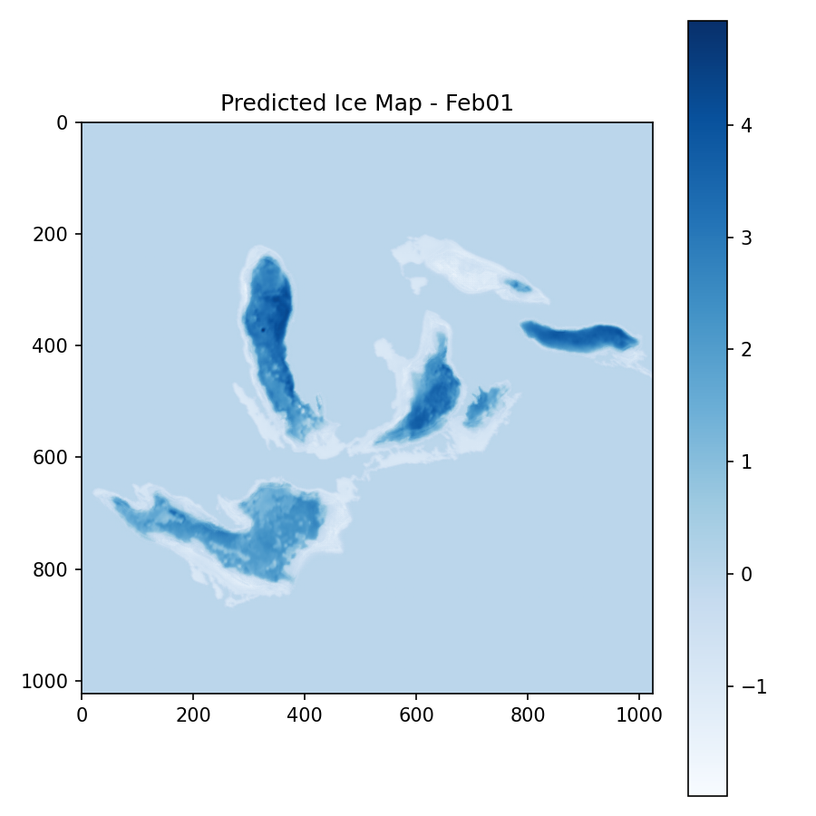
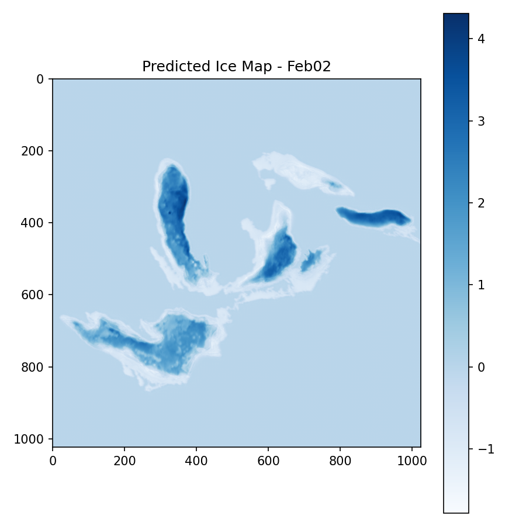
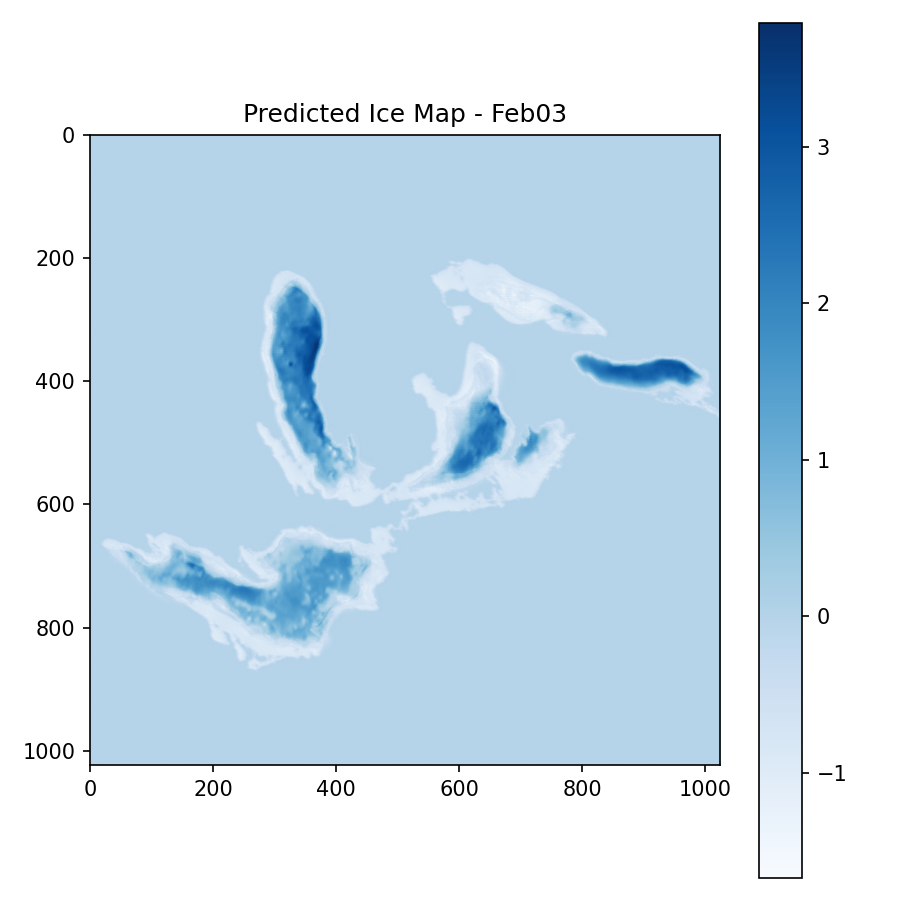
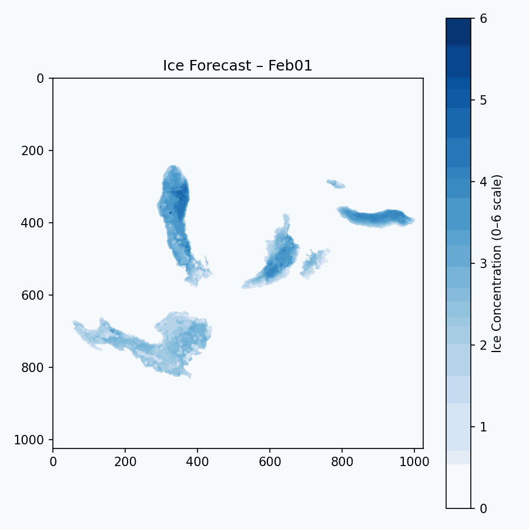

🌦️ MISpace Hackathon
Weather Forecast Dashboard
Welcome to Laker IceLabs
Exploring and analyzing weather patterns using NetCDF files and machine learning
About Forecast Data
-- ML model balls
-- Forecast explanation balls
The output PNGs and the GIF show the model's predicted ice concentration maps for each forecasted day. Each image is a full 1024x1024 grid pulled directly from the structure of the original NetCDF files, which means that every pixel corresponds to the same spatial location on the Great Lakes as in the real dataset. Because of how the dataset stores latitude, the images render flipped vertically by default, so north appears at the bottom and south at the top. The x-axis still represents longitude and the y-axis represents latitude in that inverted orientation.
Each pixel's color reflects the predicted ice concentration value from the model. We use a fixed color scale from 0 to 6 so the meaning stays consistent across all days. I think in the original January data, values near 0 represent open water and higher values represent thicker or more complete ice cover. On this scale, darker blues correspond to higher ice values and lighter or washed-out blues represent lower values. The color bar on the right side of each image stays constant so you can compare predictions across time.
Additionally, the PNGs represent single-day predictions, one for each day the model generates. The GIF combines all PNGs into a time-lapse showing how the model expects ice to grow or shift across the lakes. Because the spatial grid is preserved, you can track ice changes across the region even though the output is vertically flipped relative to normal map orientation.
Forecast

- Ice Conditions: Rapid ice formation along shorelines
- Ice Thickness:
- Ice Movement:
- Western Lake Erie: maintaining 7–9/10 coverage with new ridge development
- USCG Operational Priority Areas:
- Shipping Guidance:

Description 2

Description 3

Forecast Timelapse
